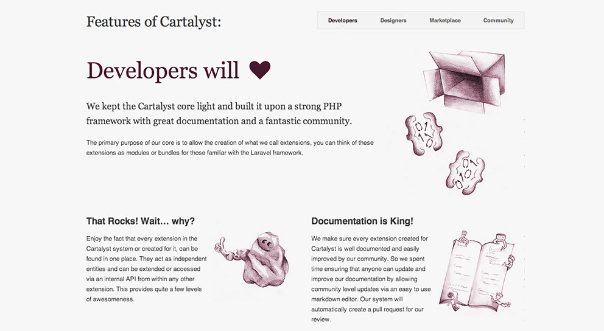

Cartalyst
Cartalyst is developer centric, opensource ecommerce engine with a strong focus on exemplary documentation, community support, and framework. They hired me to design and develop their website.
CMS Yes, Wordpress. Framework: FuelPHP/Laravel
Tools used Photoshop, SublimeText 2, HTML 5, LESS, PHP, jQuery, GitHub
Visit Website
“Easily one of the best designers I have had the pleasure of working with Alex met and exceeded our expectations. He continues to provide essential guidance to our online presence and has established himself as an experienced, dedicated, and knowledgeable member of the Cartalyst team.” - Dan Syme
Technical Details
The website was coded in HTML5 and CSS3. As a backend, FuelPHP (a PHP framework) was used. They later switched to Laravel. For the blog they use WordPress. The layout had to be transformed into a WordPress theme as well.
The complete website has many sections (some not yet implemented) like advocate, features, roadmap, blog, forums, marketplace, user registration, profiles, documentation, job board, and others.

Design
For the design of the website, Dan (co-founder) pretty much gave me a blank canvas to impress him with my ideas. They wanted a simple, clean (without many gradients or 3D effects) design that would reflect their philosophy. The only requirement was to use a purple shade (their signature colour) for headings and images.
{kind=link}
After many iterations, and taking into account many variables, we finally decided how each section of the website would look like. It was time to code the design.
Coding
The website should be responsive, catering for three primary widths: small (mobile), medium (tablet) and large (desktop). For the CSS, I decided that each media query would rely on the “mobile-first” (the global styling if you will) and then inside the query make special changes. I ended up using four media queries (five with “mobile-first”):
- MOBILE FIRST
- BELOW 500px
- ABOVE 500px
- ABOVE 830px
- ABOVE 1000px

The reason for that was that breakpoints on each page at certain widths were not consistent. So I needed finer control of the layout. Even if little changes are made from a 830px layout to a 1000px layout.
Using LESS for writing the CSS code allowed me to do stuff like:
color: lighten(@link-color, 10%);
.rounded-corners(3px);In the “Features” section of the website a content slider was implemented. You can slide content by clicking on the tabs, the buttons below the content, your keyboard arrows, and on mobile devices by swiping your finger. This awesome slider (which is future-proof) couldn’t have been implemented without the very useful Swipe2 JavaScript plugin.

Accessibility
In matters of accessibility all images were added an “alt” tag, descriptive coding, visual feedback (see next paragraph), “skip to content” for screen readers, and more. One major request from the client was IE 8 support. This meant that all the pages of the website had to be restructured and “hacked” to make them consistent and looking the same on Internet Explorer. Thankfully, the new version of the plugin used for the features slider supported IE 8.
Visual feedback when hovering over each link, button or thumbnail was implemented. When hovered, the links and the buttons change colour, and on focusing the input fields they become darker with a glowing edge.
In conclusion, as with every project I finish, I learned a lot from it. A big lesson was how to rely on GitHub heavily to push new changes to the website. I had a GitHub account since November 2011 but I never used it that extensively. This was a confidence booster and allowed me to cancel my hosting and move my websites to GitHub.